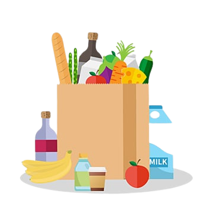

Alimentação Saudável
O que é?
Uma alimentação saudável é aquela que fornece ao corpo os nutrientes necessários para seu funcionamento ideal, promovendo a saúde e o bem-estar. Ela é caracterizada por uma variedade de alimentos que incluem uma ampla gama de nutrientes essenciais, como vitaminas, minerais, proteínas, carboidratos, gorduras saudáveis e fibras.
Pontos para uma alimentação saudável
- Variedade de Alimentos: Consuma uma ampla variedade de alimentos, incluindo frutas, vegetais, grãos integrais, proteínas magras e produtos lácteos com baixo teor de gordura. A diversificação da dieta ajuda a garantir que você obtenha todos os nutrientes de que precisa.
- Porções Adequadas: Controle o tamanho das porções para evitar o excesso de calorias. Esteja atento às suas necessidades calóricas diárias e ajuste as porções de acordo.
- Grãos Integrais: Substitua os grãos refinados por grãos integrais, como arroz integral, aveia e pão integral. Eles são ricos em fibras e nutrientes.
- Proteínas Magras: Inclua fontes de proteína magra em sua dieta, como peito de frango, peixe, carne magra, ovos e leguminosas (feijão, lentilhas).
- Gorduras Saudáveis: Opte por gorduras saudáveis, como as encontradas em abacates, nozes, sementes e azeite de oliva. Evite gorduras saturadas e trans em alimentos processados e frituras.
- Frutas e Vegetais: Consuma uma variedade de frutas e vegetais coloridos, pois eles fornecem uma ampla gama de vitaminas, minerais e antioxidantes.
- Limitação de Açúcares Adicionados: Reduza o consumo de alimentos e bebidas ricos em açúcares adicionados, como refrigerantes, doces e bolos.
- Redução de Sal: Diminua o consumo de sal, já que o excesso de sódio está associado a problemas de saúde, como hipertensão.
- Hidratação Adequada: Beba água regularmente ao longo do dia. Evite bebidas açucaradas e refrigerantes.
- Moderação e Equilíbrio: Evite dietas extremamente restritivas. O equilíbrio é fundamental para uma alimentação saudável.
- Refeições Regulares: Tente fazer refeições regulares e evite pular refeições, o que pode levar a excessos mais tarde.
- Atenção ao Processamento: Reduza o consumo de alimentos altamente processados, que geralmente são ricos em gorduras trans, sódio e açúcares adicionados.
- Planejamento de Refeições: Planeje suas refeições e lanches com antecedência para evitar escolhas alimentares impulsivas.
- Conscientização sobre o Alimento: Esteja ciente do que você come e como se sente após as refeições. Isso pode ajudar a identificar gatilhos alimentares e promover escolhas mais saudáveis.
